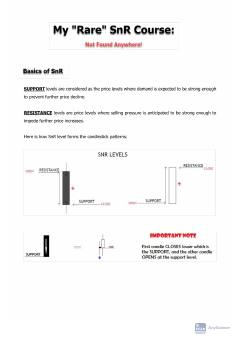

MRTreydingda qo'llab-quvvatlash va qarshilik darajalarini tahlil qilish bo'yicha amaliy qo'llanma.
Ushbu qo'llanma treydingda qo'llaniladigan qo'llab-quvvatlash va qarshilik (Support and Resistance) darajalarini aniqlash va ulardan foydalanish usullarini tushuntiradi. Unda klassik, bo'shliq (gap) va doji darajalari hamda narx harakati (price action) strategiyalari batafsil yoritilgan.